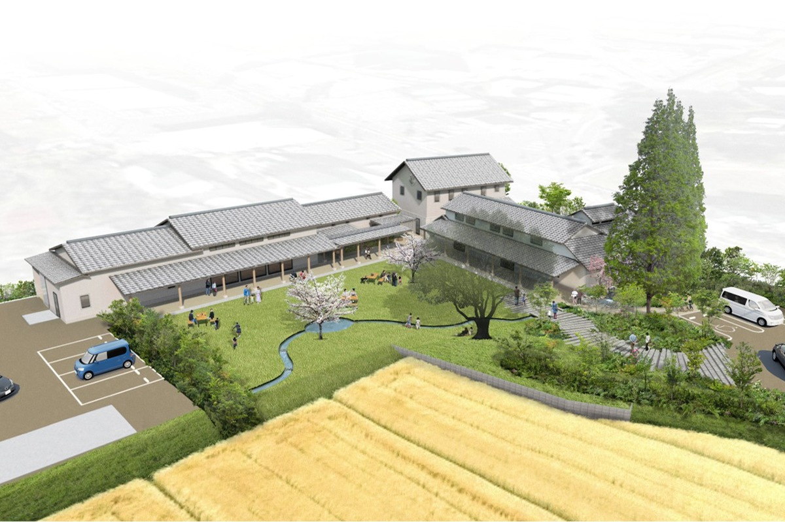
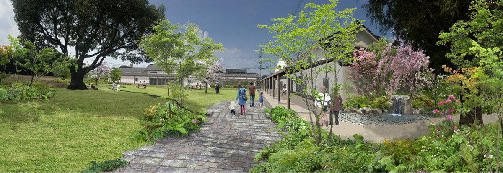
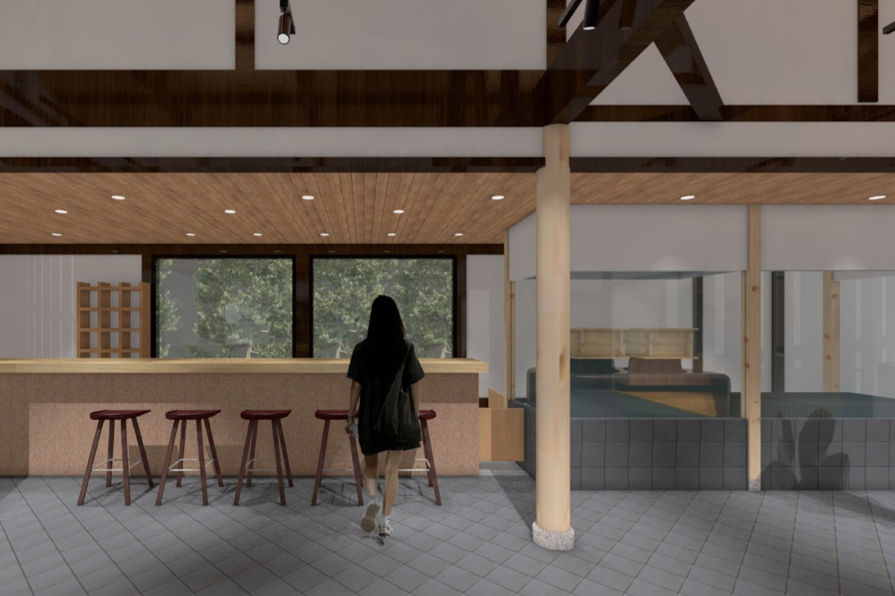
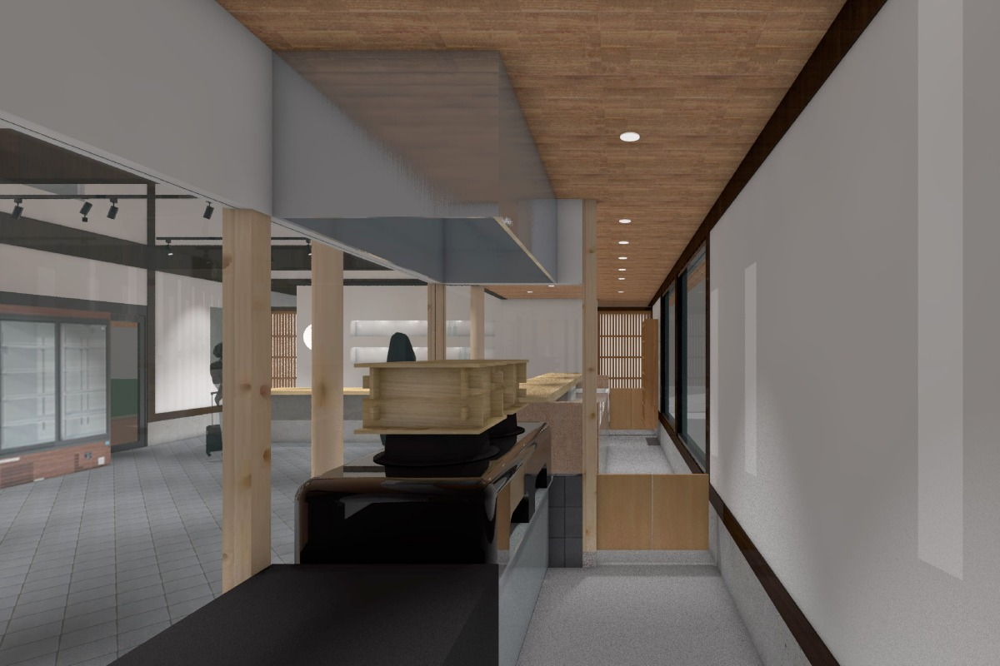
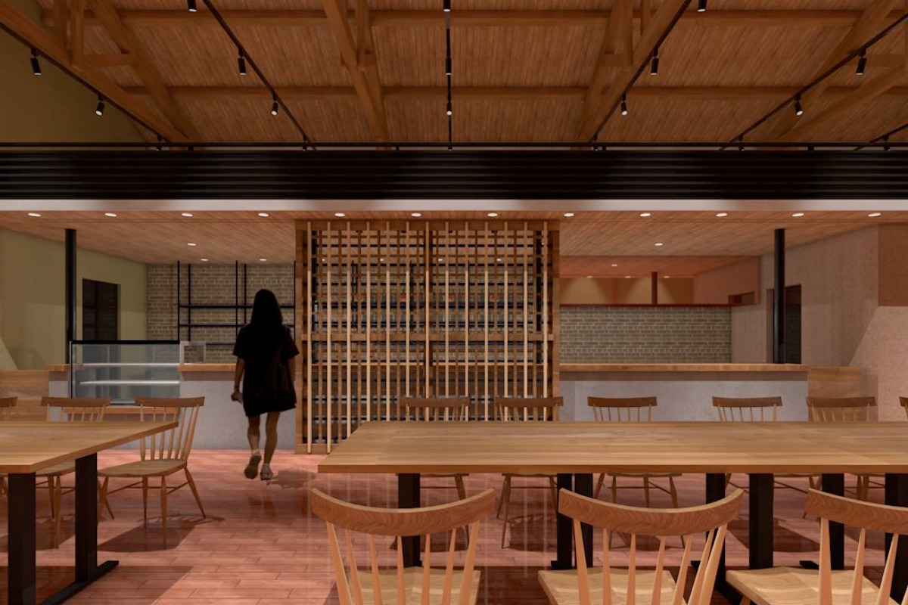
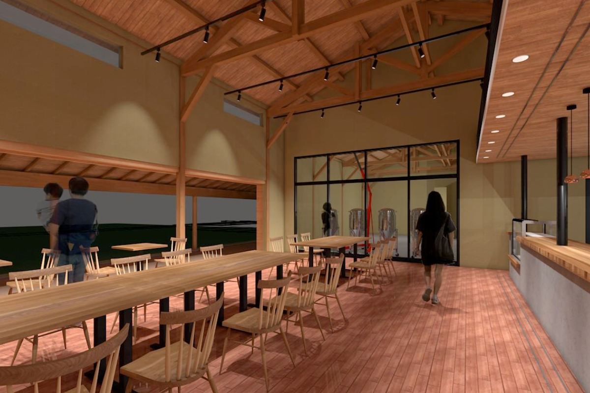

Префектура Оита · Уса · сакэ и брожение
«Карасима Кокуу-но кура»: винокурня iichiko открыла в Усе дом сакэ, пива и кодзи

Уса на севере префектуры Оита известна святилищем Уса-дзингу, а ещё здесь делают сётю iichiko. В мае 2022 года винокурня Sanwa Shurui открыла в районе Карасима «Карасима Кокуу-но кура», место, где можно попробовать сварить собственное сакэ.
Кто
Винокурня из Усы
Компания Sanwa Shurui основана в 1958 году. Её главная марка это ячменный сётю iichiko, но кроме него здесь делают сакэ «Вака ботан», вино «Адзиму», бренди, ликёры, крепкие напитки и даже безалкогольные напитки.
Новый комплекс задумали как центр культуры кодзи и брожения: здесь хотели показать, как природа Усы помогает делать сакэ, и собрать вокруг этого гостей из Японии и других стран и местных жителей. О планах заговорили в 2021 году, а в мае 2022 года «Карасима Кокуу-но кура» открылась для гостей.
Архитектура
Сакэварня вокруг сада

Корпуса построены по образцу старинной сакэварни: в центре внутренний двор, вокруг зданий низкие навесы под черепицей, и всё это в спокойном современном японском стиле. В глину для стен добавили местную землю и солому ячменя «Нисино хоси». Этот ячмень растят в Усе, и из него Sanwa Shurui делает сётю и пиво.
Наружные стены украшает котэ-э, рельеф из штукатурки, который мастер вылепливает мастерком. Таких рельефов много сохранилось в Адзиму, одном из районов Усы, и в старину их делали как пожелание счастья дому и всей округе. У входа посадили деревья и цветы, которые растут в этих местах, чтобы гости видели, как меняется природа от сезона к сезону. Через двор бежит ручей, и его журчание задаёт неспешный ритм.
Сакэ
«Кура риса»
Бывшее главное здание компании, где раньше был и фирменный магазин, перестроили в «Кура риса»: здесь работает маленькая сакэварня на местном рисе. Сакэ, сваренное прямо тут, можно попробовать в дегустационном уголке.


Темой занятий выбрали культуру брожения. По замыслу, можно без подготовки присоединиться к закладке сакэ или, наоборот, не спеша сварить сакэ по собственному заказу и на свой вкус.
Пиво
«Кура ячменя»
«Кура ячменя» построили заново. Это пивоварня, где варят пиво из ячменя «Нисино хоси», выращенного в Усе, юдзу и других местных продуктов, а при ней зал, где можно поесть и выпить.


Кроме пива и сакэ, сваренных в комплексе, здесь задумали коктейли на напитках Sanwa Shurui: сётю, сакэ, вине, бренди, ликёрах и крепком алкоголе. Закуски готовят из сезонных продуктов округи и местных заготовок и добавляют к ним что-нибудь ферментированное. Для тех, кто не пьёт, и для детей предусмотрели десерты, придуманные вместе с местной кондитерской, фирменную смесь кофе, безалкогольные коктейли и другие напитки. В планах были и вечера с барменами, которые показывают своё мастерство.
«Хочется, чтобы в спокойной обстановке молодые люди и гости из-за границы почувствовали, в чём прелесть хорошей выпивки, и заинтересовались ею. Мы хотим сделать это место центром, который рассказывает о климате Усы и о том, как здесь делают напитки, устраивать занятия о брожении и о том, как сочетать алкоголь с местными продуктами, проводить праздники в каждое время года»
президент Sanwa Shurui
«Карасима Кокуу-но кура»
- Адрес
- префектура Оита, Уса, Карасима, 4-3
- Часы работы
- 10:00–17:00
- Выходные
- среда, О-бон, новогодние праздники